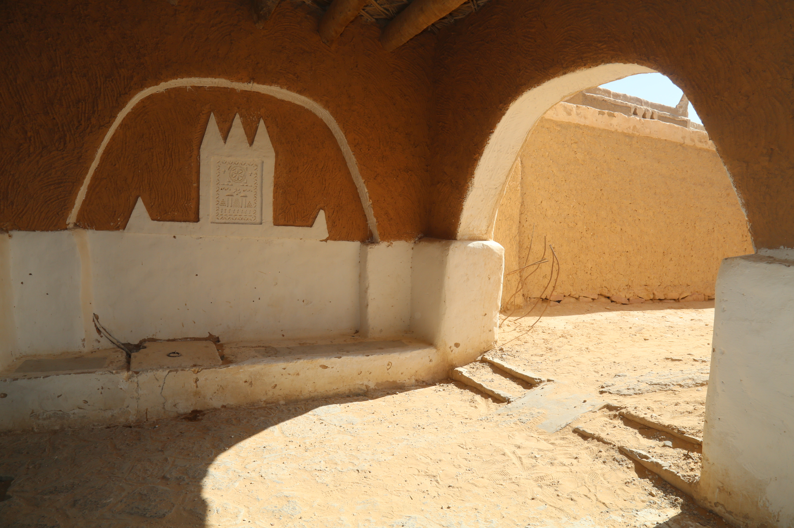
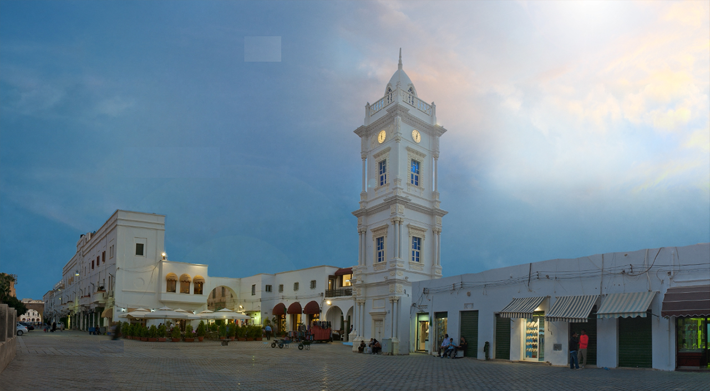
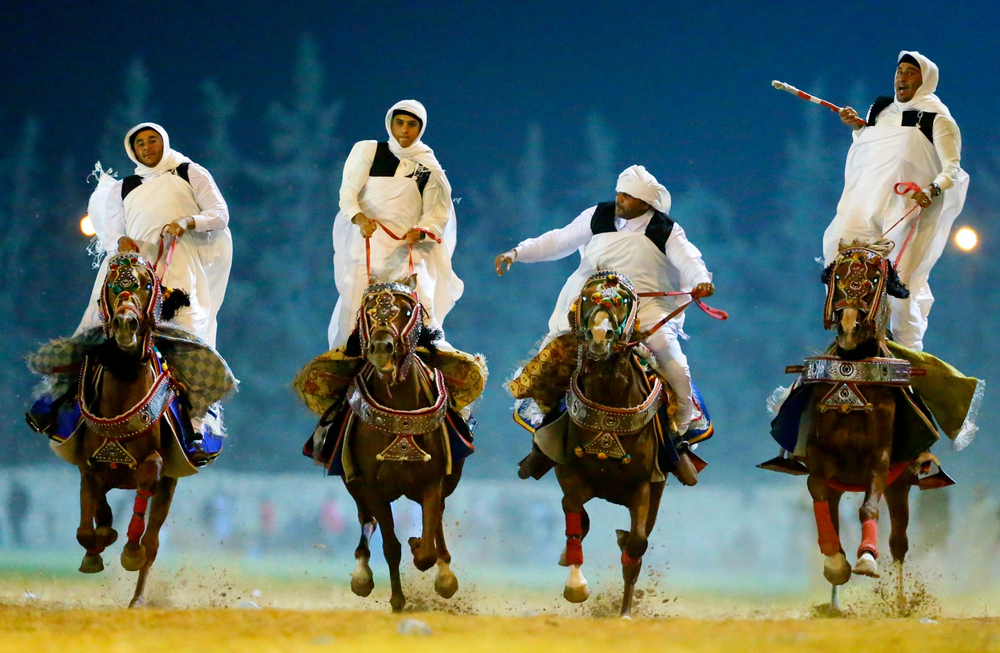
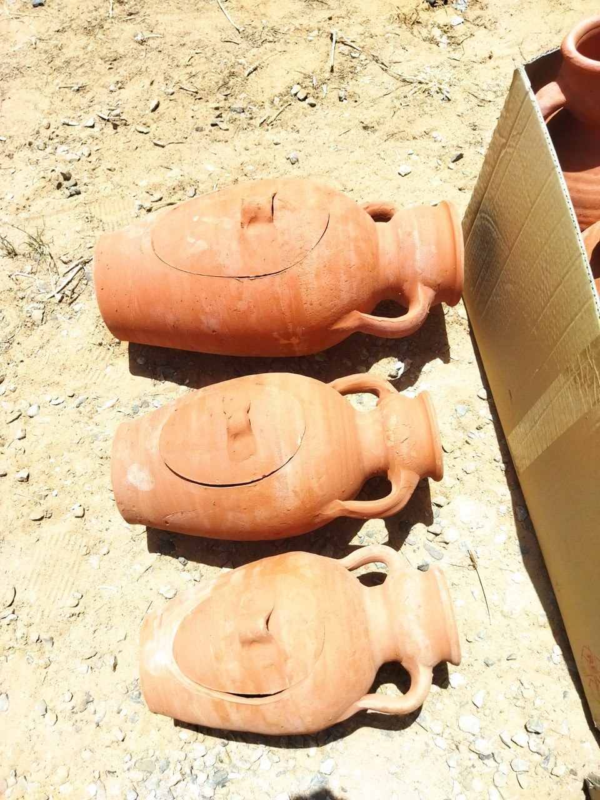

مدينة تاريخية
طرابلس
العاصمة وبوابة المتوسط، حيث المدينة القديمة والأسواق والذاكرة الحضرية.
اكتشف المزيد
Visit Libya - A Journey Through Time
ليبيا أرض الحضارات وموطن السحر والجمال
من عبق التاريخ إلى مستقبل واعد
من المتوسط إلى الصحراء، ومن المدن القديمة إلى الواحات، تبدأ الرحلة من هنا.
العاصمة وبوابة المتوسط، حيث المدينة القديمة والأسواق والذاكرة الحضرية.
اكتشف المزيد
مدينة الظل والضوء وعمارة الصحراء البيضاء وتجربة الضيافة الواحية.
اكتشف المزيد
تكوينات صخرية وفنون قديمة تجعل الجنوب الليبي ذاكرة مفتوحة للإنسان.
اكتشف المزيد
مدينة رومانية كبرى على الساحل الغربي بمسرح وأسواق وحمامات ومعابد.
اكتشف المزيد

مدينة كلاسيكية في الجبل الأخضر بين المعابد والمدافن والطبيعة.
اكتشف المزيد

مياه وسط الرمال ومشاهد صحراوية تناسب التصوير والمغامرة المنظمة.
اكتشف المزيدليست الوجهات أسماء على خريطة فقط، بل حكايات ضوء وعمارة وذاكرة وطبيعة.

في الأزقة البيضاء وممرات الظل، تظهر عبقرية العمارة الصحراوية الليبية.
اكتشف المزيد
نقوش وتكوينات تحمل حكايات الإنسان والطبيعة عبر آلاف السنين.
اكتشف المزيد
أسواق وأبواب وعمارة متوسطية تجعل كل جولة بداية لاكتشاف جديد.
اكتشف المزيد
غابات ووديان ومدن أثرية تفتح وجه ليبيا الأخضر للزائر.
اكتشف المزيد






استكشف ليبيا عبر خرائط تفاعلية تربط الوجهات والمواقع التراثية والطبيعية والخدمية.
اسأل عن الوجهات، البرامج، الثقافة، التراث، السلامة، أو المطبخ الليبي.